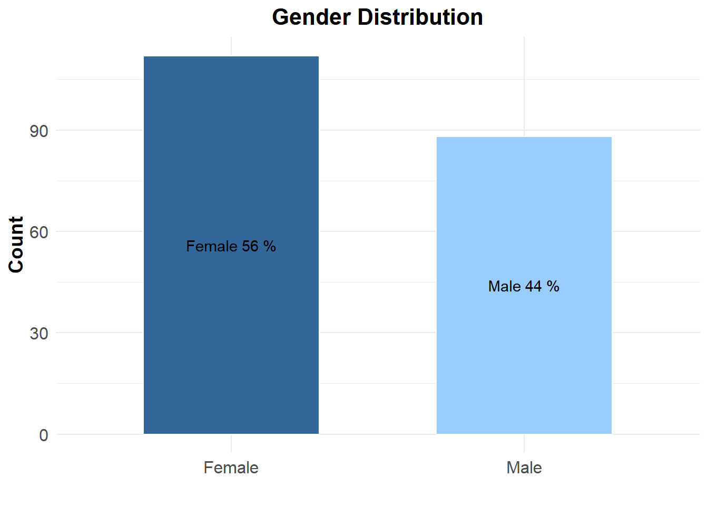
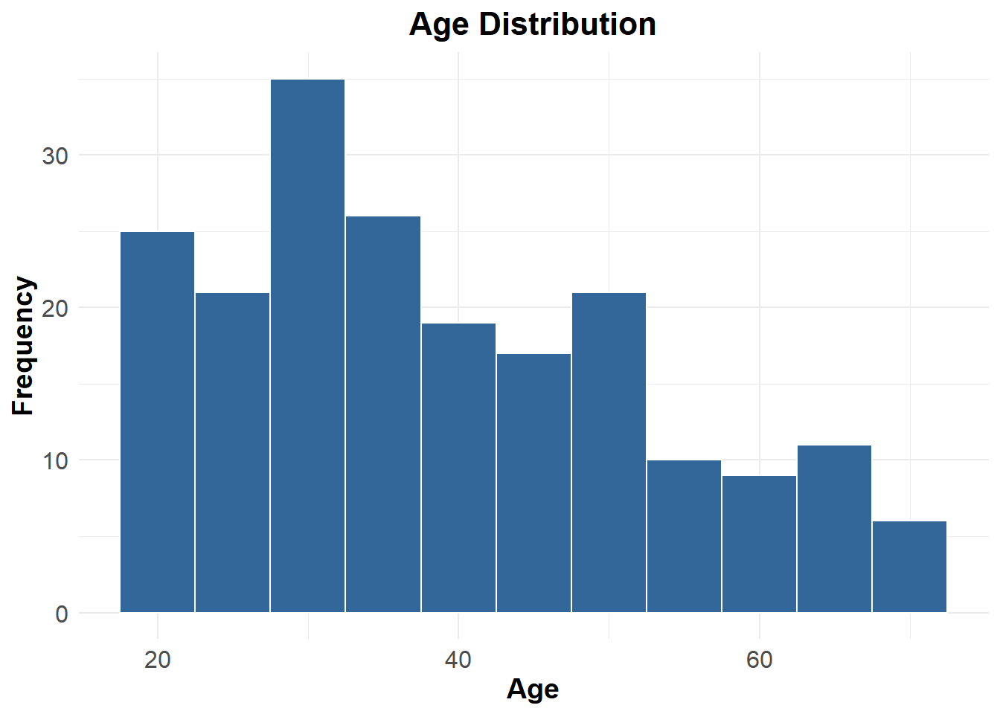
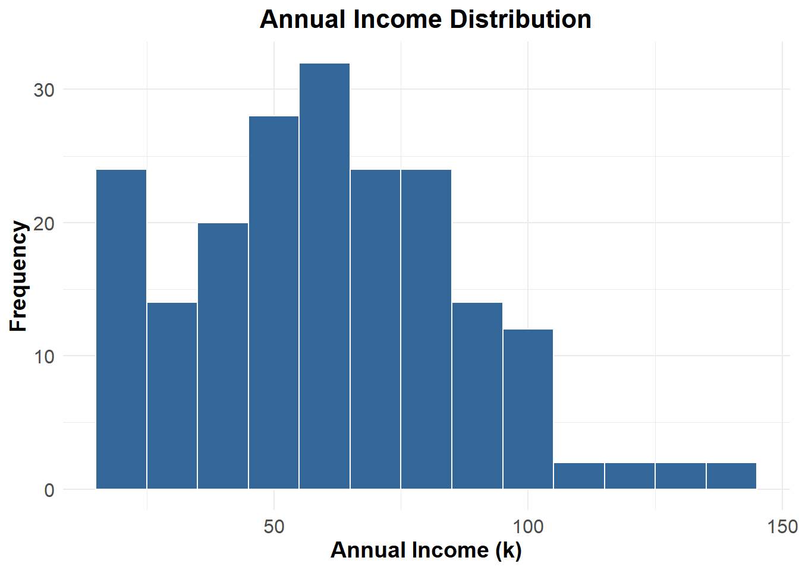
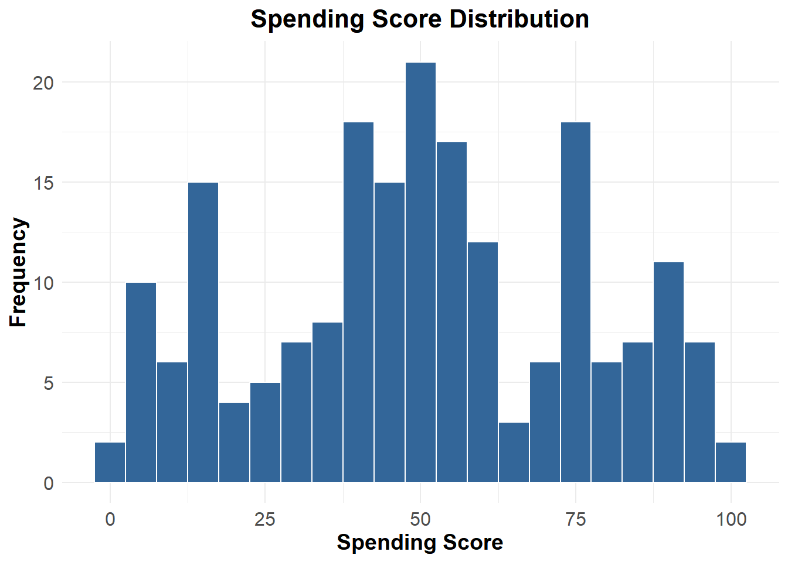
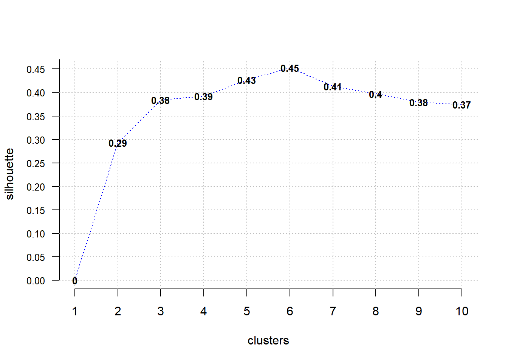
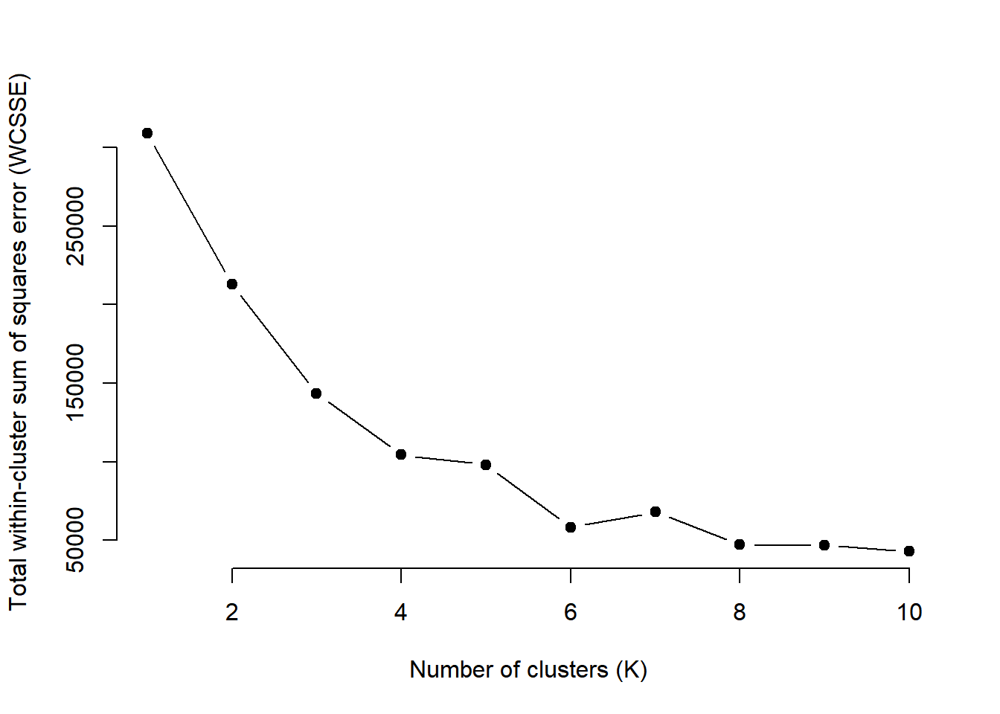
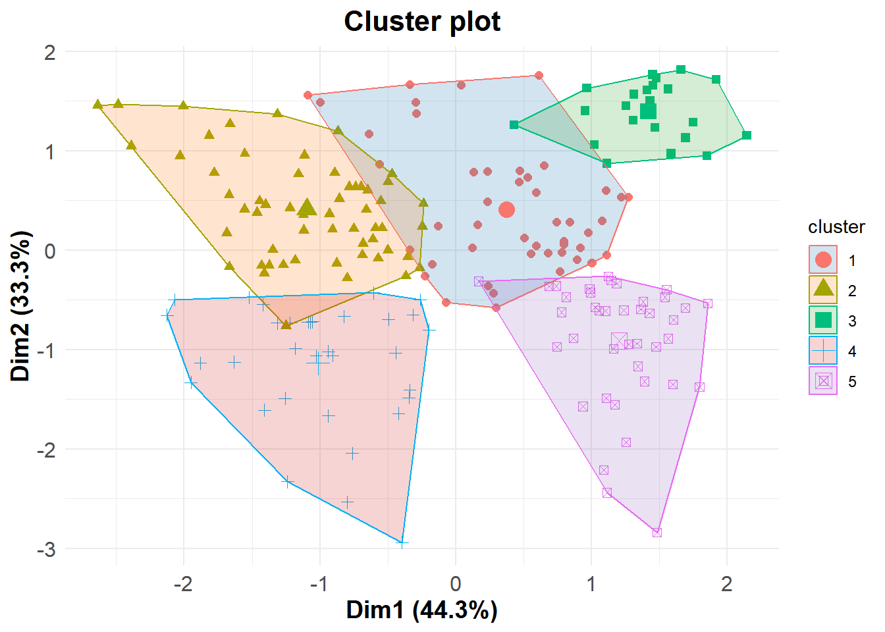

library(ggplot2)
library(factoextra)
library(dplyr)
library(ClusterR)
library(eclust)Introduction
The purpose of this business report is to provide an overview of a project that analyzed a customer database from a mall. The project aimed to uncover underlying patterns in the customer base and group customers into segments, known as market segmentation. By understanding these segments, the marketing team can adopt a more targeted approach to reach consumers, and the mall can make informed strategic decisions to increase profits.
Dataset and Methods Used
The dataset used in this analysis is a customer database from a mall, containing 200 observations with basic information such as age, gender, annual income, and spending score. The analysis was performed using the R programming language. Exploratory data analysis, descriptive statistics, data visualization, and unsupervised machine learning techniques (K-Means Clustering) were employed to achieve the project objectives.
Project Highlights
The project yielded several important highlights and insights:
Age Distribution: The analysis of the age distribution revealed that the majority of customers in the database were adults below 40 years old. There were fewer middle-aged and older adults represented in the customer base.
Annual Income Distribution: The distribution of annual income showed that a significant number of customers had an income range of approximately $60,000 to $80,000 per year. However, there were fewer customers with higher annual incomes.
Spending Score Distribution: The distribution of spending scores exhibited a more balanced pattern, with a concentration around the mean value. However, there were still notable proportions of customers with both low and high spending scores.
Market Segmentation: Through the application of K-means clustering, the analysis identified five distinct customer segments based on their demographic and spending characteristics.
“Young and Moderate Income” Cluster: This segment consisted of young individuals with a moderate income level and average spending behavior.
“Middle-Aged and Moderate Income” Cluster: This segment represented middle-aged individuals with moderate incomes and average spending habits.
“Young and High Spending” Cluster: Despite having lower incomes, individuals in this cluster exhibited a tendency for high spending.
“Middle-Aged and Conservative Spending” Cluster: Customers in this cluster had higher incomes but conservative spending habits, emphasizing financial stability and savings.
“Young and High Income” Cluster: This segment consisted of young individuals with high incomes and high spending scores, representing an affluent customer group.
Load the required packages and dataset
customer_data <- read.csv("https://raw.githubusercontent.com/karolo89/WEBKOE/main/projects/Business/MarketSegmentation/Mall_Customers.csv")
# Current column names
current_col_names <- colnames(customer_data)
# New column names
new_col_names <- c("CustomerID", "Gender", "Age", "AnnualIncome", "SpendingScore")
# Assign the new column names to the data frame
colnames(customer_data) <- new_col_names
customer_data <- customer_data%>%
select(-CustomerID)
summary(customer_data) Gender Age AnnualIncome SpendingScore
Length:200 Min. :18.00 Min. : 15.00 Min. : 1.00
Class :character 1st Qu.:28.75 1st Qu.: 41.50 1st Qu.:34.75
Mode :character Median :36.00 Median : 61.50 Median :50.00
Mean :38.85 Mean : 60.56 Mean :50.20
3rd Qu.:49.00 3rd Qu.: 78.00 3rd Qu.:73.00
Max. :70.00 Max. :137.00 Max. :99.00 # Calculate gender percentages
gender_counts <- table(customer_data$Gender)
gender_pct <- round(gender_counts / sum(gender_counts) * 100)
gender_labels <- paste(names(gender_counts), gender_pct, "%", sep = " ")
# Set color palette
colors <- c("#336699", "#99CCFF")
# Create a data frame for the chart
gender_data <- data.frame(gender = names(gender_counts), count = gender_counts) %>%
mutate(label = gender_labels)
# Create a bar plot to visualize the gender variable
gender_plot <- ggplot(gender_data, aes(x = gender, y = gender_counts, fill = gender)) +
geom_bar(stat = "identity", width = 0.6, color = "white") +
theme_minimal() +
scale_fill_manual(values = colors) +
labs(x = "", y = "Count", fill = "") +
geom_text(aes(label = label), position = position_stack(vjust = 0.5)) +
ggtitle("Gender Distribution") +
theme(plot.title = element_text(size = 16, face = "bold", hjust = 0.5),
axis.text = element_text(size = 12),
axis.title = element_text(size = 14, face = "bold"),
legend.position = "none")
# Plot age distribution with modified binwidth
age_plot <- ggplot(customer_data, aes(x = Age)) +
geom_histogram(binwidth = 5, fill = "#336699", color = "white") +
labs(x = "Age", y = "Frequency") +
ggtitle("Age Distribution") +
theme_minimal() +
theme(plot.title = element_text(size = 16, face = "bold", hjust = 0.5),
axis.text = element_text(size = 12),
axis.title = element_text(size = 14, face = "bold"))
# Plot annual income distribution with modified binwidth
income_plot <- ggplot(customer_data, aes(x = AnnualIncome)) +
geom_histogram(binwidth = 10, fill = "#336699", color = "white") +
labs(x = "Annual Income (k)", y = "Frequency") +
ggtitle("Annual Income Distribution") +
theme_minimal() +
theme(plot.title = element_text(size = 16, face = "bold", hjust = 0.5),
axis.text = element_text(size = 12),
axis.title = element_text(size = 14, face = "bold"))
# Plot spending score distribution with modified binwidth
score_plot <- ggplot(customer_data, aes(x = SpendingScore)) +
geom_histogram(binwidth = 5, fill = "#336699", color = "white") +
labs(x = "Spending Score", y = "Frequency") +
ggtitle("Spending Score Distribution") +
theme_minimal() +
theme(plot.title = element_text(size = 16, face = "bold", hjust = 0.5),
axis.text = element_text(size = 12),
axis.title = element_text(size = 14, face = "bold"))
# Display the plots
print(gender_plot)
print(age_plot)
print(income_plot)
print(score_plot)
K-means Clustering
Silhoutte
Optimal_Clusters_KMeans(customer_data %>%
select("Age", "AnnualIncome", "SpendingScore"),
max_clusters = 10, plot_clusters = T, criterion = 'silhouette')
[1] 0.0000000 0.2931661 0.3839350 0.3923693 0.4269573 0.4523444 0.4132930
[8] 0.3969484 0.3791567 0.3747368WCSSE
Optimal_Clusters_KMeans <- function(data, max_clusters, plot_clusters = TRUE, criterion = 'WCSSE') {
set.seed(123)
# Function to calculate the total within-cluster sum of squares error (WCSSE)
calculate_wcsse <- function(k) {
kmeans_result <- kmeans(data, k)
return(kmeans_result$tot.withinss)
}
# Calculate the WCSSE for each number of clusters
wcsse_values <- sapply(1:max_clusters, calculate_wcsse)
if (plot_clusters) {
# Plot the WCSSE values
plot(1:max_clusters, wcsse_values,
type = "b", pch = 19, frame = FALSE,
xlab = "Number of clusters (K)",
ylab = "Total within-cluster sum of squares error (WCSSE)")
}
# Determine the optimal number of clusters based on the criterion
if (criterion == 'WCSSE') {
optimal_clusters <- which.min(wcsse_values)
message("The optimal number of clusters based on WCSSE is ", optimal_clusters)
} else {
# Add additional criteria here
message("Invalid criterion specified.")
return(NULL)
}
return(optimal_clusters)
}
# Usage example
optimal_clusters <- Optimal_Clusters_KMeans(customer_data %>%
select("Age", "AnnualIncome", "SpendingScore"),
max_clusters = 10, plot_clusters = TRUE, criterion = 'WCSSE')
cust_kmean <- eclust(customer_data %>%
select(AnnualIncome, SpendingScore, Age),
stand = TRUE,FUNcluster = "kmeans",k=5,graph = F)
aggregate(customer_data %>%
select(AnnualIncome, SpendingScore, Age),
by =list(gerombol=cust_kmean$cluster), FUN = mean) gerombol AnnualIncome SpendingScore Age
1 1 50.10638 43.61702 27.51064
2 2 48.48276 41.77586 55.55172
3 3 25.72727 79.36364 25.27273
4 4 88.93939 16.96970 41.93939
5 5 86.10000 81.52500 32.87500# Define a custom color palette
my_colors <- c("#1f77b4", "#ff7f0e", "#2ca02c", "#d62728", "#9467bd")
# Visualize the clustering results with improved theme and custom colors
fviz_cluster(cust_kmean, geom = "point", pointsize = 2) +
theme_minimal() +
theme(plot.title = element_text(size = 16, face = "bold", hjust = 0.5),
axis.text = element_text(size = 12),
axis.title = element_text(size = 14, face = "bold"))+ scale_fill_manual(values = my_colors)
Cluster Analysis
“Young and Moderate Income” Cluster: This cluster consists of young individuals with a moderate income level and average spending behavior. To target this segment effectively, the marketing manager can focus on offering affordable products or services that align with the interests and preferences of this younger demographic. Promotional campaigns that highlight value for money, convenience, and trendy features could resonate well with this cluster.
“Middle-Aged and Moderate Income” Cluster: This cluster represents middle-aged individuals with moderate incomes and average spending habits. The marketing manager can target this segment by emphasizing quality, durability, and reliability in their products or services. Highlighting the long-term value and practicality of the offerings can be effective in capturing the attention of this cluster.
“Young and High Spending” Cluster: Despite their lower incomes, individuals in this cluster exhibit a tendency for high spending. The marketing manager can capitalize on this by offering attractive financing options, discounts, or loyalty programs that reward their spending. Promoting exclusive or unique experiences can also appeal to this segment, as they may prioritize indulgence and personal enjoyment.
“Middle-Aged and Conservative Spending” Cluster: With higher incomes but conservative spending habits, this cluster values financial stability and savings. The marketing manager can position products or services as long-term investments or solutions that offer cost savings in the long run. Emphasizing features such as durability, reliability, and cost-effectiveness can be effective in attracting this cluster.
“Young and High Income” Cluster: This cluster represents young individuals with high incomes and high spending scores. The marketing manager can focus on luxury, prestige, and personalized experiences to appeal to this affluent segment. Tailored marketing campaigns, exclusive offers, and high-end branding can effectively capture the attention and loyalty of this cluster.
It’s important to further analyze the clusters and their characteristics in order to refine these recommendations and tailor them to the specific goals and objectives of the marketing manager and the business. Additionally, conducting market research and gathering customer insights will provide a more comprehensive understanding of each cluster’s preferences and behaviors, enabling the marketing manager to create targeted and impactful marketing strategies.